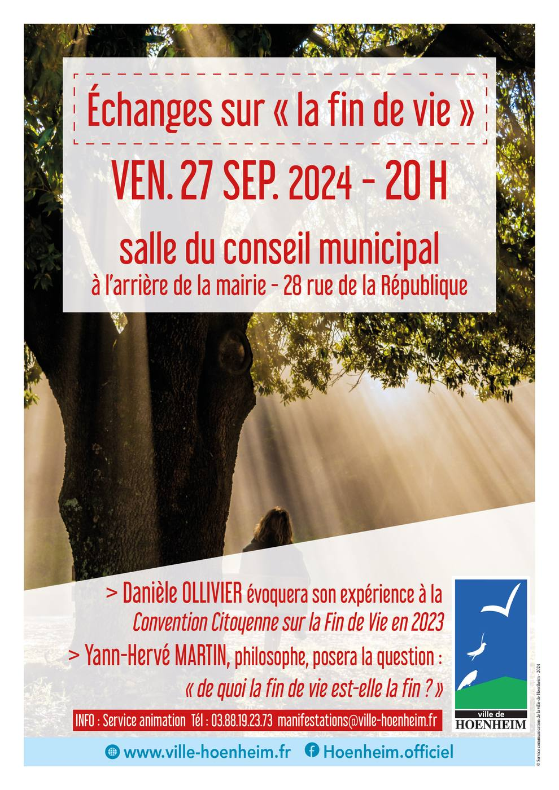

- Cet événement est terminé
Echanges sur « la fin de vie »
27 septembre 2024 à 20 h 00 min - 21 h 30 min
Navigation de l'événement

Rendez-vous le vendredi 27 septembre à 20h en salle du conseil municipal à l’arrière de la mairie, 28 rue de la République avec Danièle Ollivier qui parlera de son expérience à la Convention Citoyenne sur la Fin de Vie en 2023 et Yann-Hervé Martin philosophe « de quoi la fin de vie est-elle la fin ? ».